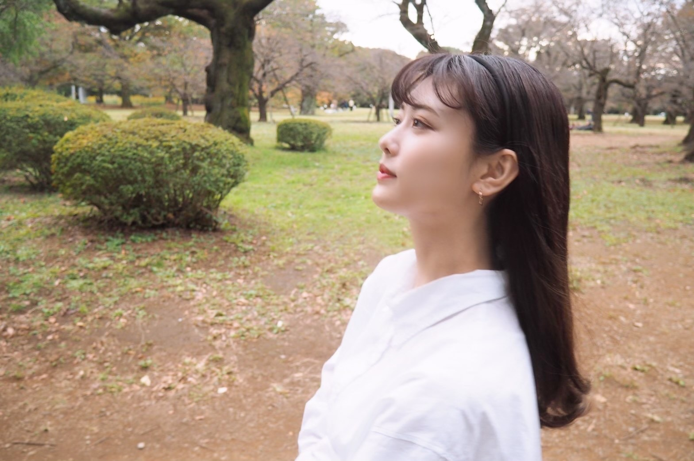
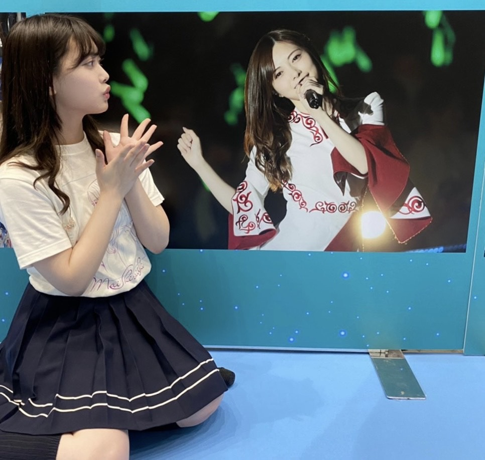

2020/1031Sat将来またみんなで会えたらいいね
こんばんは！
伊藤純奈です

Instagram開設しました☺︎
のんびりと更新していけたら
と思いますフォローよろしく
お願いします〜〜
https://www.instagram.com/junna_ito_official
白石さん。
卒業おめでとうございます☺︎
本当に多くの人から愛されて尊敬されて
目標とされている白石さんは最後まで
綺麗でお茶目で強くてかっこいい先輩
でした！
乃木坂に入る前、オーデション中だった
かなあ。明け方まで眠い目をこすりながら
待って見たCDTVの制服のマネキン。
お姉さんメンバーだけでやっていたあの
パフォーマンス。今でも鮮明に思い出すなあ。
白石さんが真ん中に立っていてこんなに
綺麗な人がいるのかって衝撃をうけたのを
覚えてます。
乃木坂46として白石さんと出会えた事が
本当に嬉しいし、一生の誇りです。
もっと話したかったけどまた会えるもんね？
って言ってくれたからすぐ会えるものだと
思ってますよ〜白石さん〜！！！(笑)
ずーっと私たち後輩のお手本で
いてくれてありがとうございました。
本当に本当にお疲れ様でした！
何回も言ってるけど1期生のみんなは
じゅんにとって本当に大切な大好きな
先輩達なのです。一生尊敬してます！
だいすきだーー！！！
白石さんと撮った写真は
いっぱいあるけどじゅんだけの宝物にします。(笑)

改めて乃木坂46の事が
だいすきになったし、
守りたいって思ったよ〜。
2020/10/31 20:06
コメント(256)
ライブお疲れ様！
Instagram楽しみにしてるね！
Instagram楽しみにしてるね！
こんばんは。
インスタ、フォローしたよ。
かりんちゃんがインスタで、これでスイ
カ全員インスタグラマーだって。
まいやんの偉大さ、伝わってきました。
卒業してもなお、メンバーに影響を与え
ているんですね。
三国志の孔明みたい。
お姉さんメンバーの人数がぐっと少なく
なりましたね。こうなると、３，４期生
の先輩でありながら、年齢的に近い
じゅんなちゃんは、乃木坂を支える大事
な力です。
これからも宜しくお願い致します。
インスタ、フォローしたよ。
かりんちゃんがインスタで、これでスイ
カ全員インスタグラマーだって。
まいやんの偉大さ、伝わってきました。
卒業してもなお、メンバーに影響を与え
ているんですね。
三国志の孔明みたい。
お姉さんメンバーの人数がぐっと少なく
なりましたね。こうなると、３，４期生
の先輩でありながら、年齢的に近い
じゅんなちゃんは、乃木坂を支える大事
な力です。
これからも宜しくお願い致します。
インスタフォローさせていただきました！！
まいやん卒コン前日にAbemaTVで放送した、タクシーの中での会話も良かったです！
まいやん卒コン前日にAbemaTVで放送した、タクシーの中での会話も良かったです！
まじでじゅんちゃんしか勝たん(T_T)
じゅんなちゃんブログ更新ありがとうございます！
それとインスタ開設ありがとうございます
もちろんフォローしまーす！
もう少しで11月ですね、僕は11月生まれで、6日に20歳のお誕生日を迎えます！
じゅんなちゃんも11月生まれだからめっちゃ嬉しいです～！
次ブログとインスタも楽しみにして待ってまーす！
じゃあねばいばーーーい！
しんご
それとインスタ開設ありがとうございます
もちろんフォローしまーす！
もう少しで11月ですね、僕は11月生まれで、6日に20歳のお誕生日を迎えます！
じゅんなちゃんも11月生まれだからめっちゃ嬉しいです～！
次ブログとインスタも楽しみにして待ってまーす！
じゃあねばいばーーーい！
しんご
インスタ嬉しいです！！！これからたくさん楽しみにします
卒業ライブの純奈ちゃん可愛かったですお疲れ様でした！
卒業ライブの純奈ちゃん可愛かったです
じゅんちゃんブログ更新ありがとう！
インスタフォローさせていただきました！
じゅんちゃんがこれからも乃木坂支えてくれるなら俺は喜んで応援するよ！！
少しでもこの思いが届いてると嬉しいなぁ！
インスタフォローさせていただきました！
じゅんちゃんがこれからも乃木坂支えてくれるなら俺は喜んで応援するよ！！
少しでもこの思いが届いてると嬉しいなぁ！
純奈、ブログ更新ありがとう。
まずはじめに。
Instagram開設おめでとう〜
早速フォローさせて頂いております！
のんびり気ままに更新してみてください！
楽しみにしてますね〜
麻衣ちゃんがグループを卒業しましたね。
カッコいい背中は永遠のお手本ですね。
きっとまたすぐに会えると信じて！
これからの未来に幸あれ！です。。
きっといつものことだから麻衣ちゃんとの写真はとっても素敵な写真なんだろうなぁ、、
大切な宝物だね。
今までも、これからも、
変わらず応援しています。
いつも有難う。
それでは、また！
まずはじめに。
Instagram開設おめでとう〜
早速フォローさせて頂いております！
のんびり気ままに更新してみてください！
楽しみにしてますね〜
麻衣ちゃんがグループを卒業しましたね。
カッコいい背中は永遠のお手本ですね。
きっとまたすぐに会えると信じて！
これからの未来に幸あれ！です。。
きっといつものことだから麻衣ちゃんとの写真はとっても素敵な写真なんだろうなぁ、、
大切な宝物だね。
今までも、これからも、
変わらず応援しています。
いつも有難う。
それでは、また！
純ちゃん、こんばんは( ￣▽￣)ﾉｼ♪
まいやん卒業ライブお疲れさまでした。
直で観れなかったのは残念でしたが素晴らしいライブでした♪
最初のMCでみなみちゃんが泣いたのにつられて、その後も涙止まらず会場行ってたらヤバかった(汗)。
インスタ開設おめでとー♪
メンバー続々開設してますね。ボクまだインスタやってないのでどうしようか迷い中。。
まいやんとのお宝見たいけど純ちゃんだけの中に留めといたほうがいいですね。
乃木坂を守りたい純ちゃんを守りたいのでこれからも応援してます♪
みり愛ちゃんのスマホでイタズラ写真撮らないように( ・３・)笑
まいやん卒業ライブお疲れさまでした。
直で観れなかったのは残念でしたが素晴らしいライブでした♪
最初のMCでみなみちゃんが泣いたのにつられて、その後も涙止まらず会場行ってたらヤバかった(汗)。
インスタ開設おめでとー♪
メンバー続々開設してますね。ボクまだインスタやってないのでどうしようか迷い中。。
まいやんとのお宝見たいけど純ちゃんだけの中に留めといたほうがいいですね。
乃木坂を守りたい純ちゃんを守りたいのでこれからも応援してます♪
みり愛ちゃんのスマホでイタズラ写真撮らないように( ・３・)笑
純奈さんインスタ開設ありがとうございます！
乃木坂を守りたいという言葉すごく心強いです！
自分も微力ながら支えられるよう頑張ります！
乃木坂を守りたいという言葉すごく心強いです！
自分も微力ながら支えられるよう頑張ります！
Instagram開設おめでとうございます！
さっそくフォローしました！
さっそくフォローしました！
純奈ちゃん、ブログの更新ありがとう！
まず、ライブ本当にお疲れ様！！
麻衣ちゃんと純奈ちゃんのペア、好きだよ！
純奈ちゃんはお姉さん的存在だけど、麻衣ちゃんと一緒の時はどこか妹のように見えて凄く好きでした。
素敵な時間をありがとう。
そして、インスタ開設待ってました！！すぐフォローしたよ！
これからも乃木坂46を守り続けてね！応援してます！！
まず、ライブ本当にお疲れ様！！
麻衣ちゃんと純奈ちゃんのペア、好きだよ！
純奈ちゃんはお姉さん的存在だけど、麻衣ちゃんと一緒の時はどこか妹のように見えて凄く好きでした。
素敵な時間をありがとう。
そして、インスタ開設待ってました！！すぐフォローしたよ！
これからも乃木坂46を守り続けてね！応援してます！！
純奈ちゃん、初めまして♪
インスタグラムのフォローしました！
純奈ちゃん好きです！
この事態が収まったら握手会行きたいなー
応援してます！
インスタグラムのフォローしました！
純奈ちゃん好きです！
この事態が収まったら握手会行きたいなー
応援してます！
じゅんなちゃん
ブログ更新ありがとうねぇ
Instagram 始めてくれてありがとう〜
近くに感じられる たのしみだー
まったりといこう
白石さんとの 立ち直り中
素敵な思い出 共有できて嬉しかった
乃木坂46伊藤純奈の活躍
これからも たのしみだぞーっ
ブログ更新ありがとうねぇ
Instagram 始めてくれてありがとう〜
近くに感じられる たのしみだー
まったりといこう
白石さんとの 立ち直り中
素敵な思い出 共有できて嬉しかった
乃木坂46伊藤純奈の活躍
これからも たのしみだぞーっ
じゅんなもお疲れ様
スイカそろったねぇインスタ＾＾投稿楽しみ＾＾まいやんとの写真見たいのに〜〜！
純奈ちゃん、ブログ更新ありがとう‼
LIVEお疲れ様。
まいやんもお疲れ様だね。
立ち直り中泣いた。 やっぱり乃木坂46って最高だなって思ったし、大好きだなって思ったよ
愛媛県在住 中３女子 音より
追伸：今日も一日お疲れ様！
LIVEお疲れ様。
まいやんもお疲れ様だね。
立ち直り中泣いた。 やっぱり乃木坂46って最高だなって思ったし、大好きだなって思ったよ
愛媛県在住 中３女子 音より
追伸：今日も一日お疲れ様！
これからは純奈の姉貴が乃木坂を守ってください！
ブログ更新ありがとう！！
インスタ開設嬉しい
めちゃめちゃ嬉しいほんとにありがとうね～！
卒コンお疲れ様！！めちゃめちゃよかった、、
なかなか入れなくて入れたら1期生が泣いててどういう状況。って思ってたらバレッタで2期生登場でその時点で泣いてしまいました。でも本当に素敵な時間だった！素敵な時間をありがとう︎︎︎︎︎☺︎
ガルルは最高だったなあ！純奈ちゃんとまいやんの絡みが見れて幸せだったよ～！ありがとう！！
明日は初めてミーグリ参加させていただきます！！よろしくね！！大好きだあああ！！
インスタ開設嬉しい
めちゃめちゃ嬉しいほんとにありがとうね～！
卒コンお疲れ様！！めちゃめちゃよかった、、
なかなか入れなくて入れたら1期生が泣いててどういう状況。って思ってたらバレッタで2期生登場でその時点で泣いてしまいました。でも本当に素敵な時間だった！素敵な時間をありがとう︎︎︎︎︎☺︎
ガルルは最高だったなあ！純奈ちゃんとまいやんの絡みが見れて幸せだったよ～！ありがとう！！
明日は初めてミーグリ参加させていただきます！！よろしくね！！大好きだあああ！！
純奈ちゃん！
インスタ開設嬉しいです！
知ってからすぐフォローしました！
投稿楽しみにしてます
純奈ちゃんのこともっと知りたいです！
ずっとずっと大好きです
インスタ開設嬉しいです！
知ってからすぐフォローしました！
投稿楽しみにしてます
純奈ちゃんのこともっと知りたいです！
ずっとずっと大好きです
純ちゃん こんばんは
インスタ開設おめでとうございます❗️
楽しみにしています
インスタ開設おめでとうございます❗️
楽しみにしています
こんばんは。ブログ更新ありがとうございます。
インスタ開設あざーす！！早速検索しようと思います。
まいやんの卒コンお疲れ様でしたー。まいやんはインフルエンサーそのものだったように思います。まいやんの卒業はいつか必ず通る道。あと1期生も8人になっちゃいます。2期生も頑張り所ですね。
ではまた。
インスタ開設あざーす！！早速検索しようと思います。
まいやんの卒コンお疲れ様でしたー。まいやんはインフルエンサーそのものだったように思います。まいやんの卒業はいつか必ず通る道。あと1期生も8人になっちゃいます。2期生も頑張り所ですね。
ではまた。
卒業ライブお疲れ様でした！
白石さんへの愛がたーくさん伝わるブログだね
泣けてくる（泣）
インスタありがとう 嬉しい
純奈ちゃんだーい好き❤️
白石さんへの愛がたーくさん伝わるブログだね
泣けてくる（泣）
インスタありがとう 嬉しい
純奈ちゃんだーい好き❤️
ライブお疲れ様でした。
楽しかったです。
楽しかったです。
純奈コンサートお疲れ様！
純奈の言葉とか歌ってる姿に胸が熱くなりました☺︎
2期生にとって1期生の存在がすごく大切だってことが伝わってきたよ。
これからもずっと1番に応援してます。
純奈の言葉とか歌ってる姿に胸が熱くなりました☺︎
2期生にとって1期生の存在がすごく大切だってことが伝わってきたよ。
これからもずっと1番に応援してます。
純奈ちゃんブログ更新ありがとう！
そしてインスタ開設おめでとうございます！
早速フォローしました❣️
麻衣ちゃんの卒コンで2人の絡みが見れてとっても幸せでした！これからも2人とも全力で応援したいな
そしてインスタ開設おめでとうございます！
早速フォローしました❣️
麻衣ちゃんの卒コンで2人の絡みが見れてとっても幸せでした！これからも2人とも全力で応援したいな
お疲れ様
早速Instagramをフォローしたよ！
これから楽しみにしてる。
先日白石さんの卒業コンサートもみたんけど、
本当に感動した。
やっぱり乃木坂ってすごいグループだなって
改めて思った。
純奈もキラキラ輝いているよ！
では
早速Instagramをフォローしたよ！
これから楽しみにしてる。
先日白石さんの卒業コンサートもみたんけど、
本当に感動した。
やっぱり乃木坂ってすごいグループだなって
改めて思った。
純奈もキラキラ輝いているよ！
では
じゅん
こんばんは。
サヨナラの意味は泣けました。。？
こんばんは。
サヨナラの意味は泣けました。。？
これから乃木坂は色々と変わっていくでしょうから
2期生の存在がより大きな意味を持ってきますね。
インスタ楽しみにしてますね。
2期生の存在がより大きな意味を持ってきますね。
インスタ楽しみにしてますね。
ブログ更新ありがとう！
インスタさっそくフォローしたよ！
これから楽しみにしてます！
とてもいい卒業ライブだったね！
メンバーのまいやんへの愛、まいやんのメンバーへの愛とても感じられました！
でも、やっぱりまいやんと純奈ちゃんの写真みたいな笑
気が向いたらみせてね笑
インスタさっそくフォローしたよ！
これから楽しみにしてます！
とてもいい卒業ライブだったね！
メンバーのまいやんへの愛、まいやんのメンバーへの愛とても感じられました！
でも、やっぱりまいやんと純奈ちゃんの写真みたいな笑
気が向いたらみせてね笑
純奈〜ブログ更新ありがとう
Instagram開設おめでとうございます！
さっそくフォローしたよ〜(*˘︶˘*).｡*♡
まいやんの卒業ライブもお疲れ様でした。
配信ライブならてはの演出、良かったけど、あらためて神宮やドームでのライブがやれるようになるといいね。
真琴
Instagram開設おめでとうございます！
さっそくフォローしたよ〜(*˘︶˘*).｡*♡
まいやんの卒業ライブもお疲れ様でした。
配信ライブならてはの演出、良かったけど、あらためて神宮やドームでのライブがやれるようになるといいね。
真琴
ブログ更新ありがとう〜！！！
インスタ開設もめちゃめちゃ嬉しいよ〜！！すぐにフォローした！♡投稿もストーリーも楽しみにしてるね〜！
卒コンお疲れ様でした！！すごく素敵なライブでみんなのまいやんへの愛がたっくさん伝わってきたよ〜本当に素敵なグループだと思ったし、そんなグループを応援できていることをすごく誇りに思います！純奈ちゃんのまいやんへのコメントも泣いたよ〜
純奈ちゃんが守っていく乃木坂がすごく楽しみです！
お身体には気をつけてご自愛ください( ¨̮ )純奈ちゃん大好きだよ〜！！♡
インスタ開設もめちゃめちゃ嬉しいよ〜！！すぐにフォローした！♡投稿もストーリーも楽しみにしてるね〜！
卒コンお疲れ様でした！！すごく素敵なライブでみんなのまいやんへの愛がたっくさん伝わってきたよ〜本当に素敵なグループだと思ったし、そんなグループを応援できていることをすごく誇りに思います！純奈ちゃんのまいやんへのコメントも泣いたよ〜
純奈ちゃんが守っていく乃木坂がすごく楽しみです！
お身体には気をつけてご自愛ください( ¨̮ )純奈ちゃん大好きだよ〜！！♡
今度は純奈がまいやんみたいな先輩になる番だよ〜
カッコいい人になってください！！
インスタフォローしたよ笑
カッコいい人になってください！！
インスタフォローしたよ笑
純奈ちゃん、白石さんの卒業コンサートお疲れ様でした！
最高に美しく艶やかで白石さんへの愛に満ちたライブでした。純奈ちゃんもとても綺麗だったよ。
白石さんとの写真があるなら、もっと見せてください、頼むから、純奈ちゃん！
インスタ、フォローしました。写真可愛い。
11月8日のミーグリ、参加するね。お話できるのを楽しみにしてます。
最高に美しく艶やかで白石さんへの愛に満ちたライブでした。純奈ちゃんもとても綺麗だったよ。
白石さんとの写真があるなら、もっと見せてください、頼むから、純奈ちゃん！
インスタ、フォローしました。写真可愛い。
11月8日のミーグリ、参加するね。お話できるのを楽しみにしてます。
伊藤 純奈さんへ
白石さんとの大切な想い出、感動しました。これからも、お二人の繋がりが深まることを願っております。ところで、純奈さんの美しい写真素敵ですね。ただ、最初の写真は、頭から鹿の角みたいのが生えているように見えて、少し笑えました。
これからも、お体に気を付けてがんばってください。
白石さんとの大切な想い出、感動しました。これからも、お二人の繋がりが深まることを願っております。ところで、純奈さんの美しい写真素敵ですね。ただ、最初の写真は、頭から鹿の角みたいのが生えているように見えて、少し笑えました。
これからも、お体に気を付けてがんばってください。
お疲れさん
純奈とまいやんの
立ち直り中は泣いた！
久しぶりに
話したいねぇ
オンラインは終始泣いてた！
純奈とまいやんの
立ち直り中は泣いた！
久しぶりに
話したいねぇ
オンラインは終始泣いてた！
乃木坂は本当に良いグループです。
純奈ちゃん、乃木坂を守って下さい。
愛に溢れてるこのグループを！！！！
みんな大好きだよ！
純奈ちゃん、乃木坂を守って下さい。
愛に溢れてるこのグループを！！！！
みんな大好きだよ！
純奈～。 相変わらず可愛いし～。✌️これからの乃木坂46を守って行くのは2期生なので、頼むよ～。 ラブ ♥️❤️ラブ ♥️❤️
純奈ちゃんブログ更新ありがとうございますｯ！
Instagram開設おめでとうございます！！
二期生が立て続けに来てたので
来るかな来るかなと待っていたので
叶ってとてつもなく嬉しいです(3150ー)
モデルプレスさんでも開設取り上げていただいてたので
また見てみてください☺︎
純奈ちゃんが徐々に個人のお仕事をしていて
いちファンとしてすごく誇りに思います。
白石麻衣さんの卒業もあり、
見ていた背中が無くなっていき
純奈ちゃんの番がこれから来るのかなと
期待と希望を持ちファンも待っています！！
これからもずっと応援しています！
(乃木坂46を守る伊藤純奈さんをファンは絶対守ります！)
(なんの話や…)(純奈ちゃん頑張れぇぇぇぇぇ)
では体調には気をつけて！またｯ！
Instagram開設おめでとうございます！！
二期生が立て続けに来てたので
来るかな来るかなと待っていたので
叶ってとてつもなく嬉しいです(3150ー)
モデルプレスさんでも開設取り上げていただいてたので
また見てみてください☺︎
純奈ちゃんが徐々に個人のお仕事をしていて
いちファンとしてすごく誇りに思います。
白石麻衣さんの卒業もあり、
見ていた背中が無くなっていき
純奈ちゃんの番がこれから来るのかなと
期待と希望を持ちファンも待っています！！
これからもずっと応援しています！
(乃木坂46を守る伊藤純奈さんをファンは絶対守ります！)
(なんの話や…)(純奈ちゃん頑張れぇぇぇぇぇ)
では体調には気をつけて！またｯ！
純奈ー＼(^^)／
ブログ更新ありがとー(^-^)v
まいやんの卒業コンサートお疲れ様
まいやんへの、愛がスゴく伝わりました。
感動しました。
インスタグラム開設、おめでとう
スゴい楽しみです
ブログ更新ありがとー(^-^)v
まいやんの卒業コンサートお疲れ様
まいやんへの、愛がスゴく伝わりました。
感動しました。
インスタグラム開設、おめでとう
スゴい楽しみです
ライブお疲れ様～！
【1枚目の写真で一言】
純奈鹿っ♪


【1枚目の写真で一言】
純奈鹿っ♪
純奈、ブログ更新ありがとう。どこにでもいるおっさんです。
インスタインストールしてフォローしたよー。
多分、純奈専用のアプリになるよ。
これからもよろしくね。
ひでき
インスタインストールしてフォローしたよー。
多分、純奈専用のアプリになるよ。
これからもよろしくね。
ひでき
すごいね。良い先輩たちだね。乃木坂って最高だね！！純奈頑張れ！！
写真めっちゃ見たいけど、じゅんちゃんだけの宝物にして！
やっぱ乃木坂46って尊いなあ…て思ったライブだった。
またミーグリいきまーす
やっぱ乃木坂46って尊いなあ…て思ったライブだった。
またミーグリいきまーす
こんばんな～
インスタ開設おめでとう✨
スイカ勢揃いしましたー！
のんびりと楽しみますね♪
白石さん卒コン感動しました！
メンバーも格好良かったです☆
白石さんずっと綺麗でしたね！
純ちゃんも凄く魅力的ですよ✌
白石さんは皆のお手本でした！
今後は純ちゃんがお手本です◎
守りたい気持ち頼もしいです☺
インスタ開設おめでとう✨
スイカ勢揃いしましたー！
のんびりと楽しみますね♪
白石さん卒コン感動しました！
メンバーも格好良かったです☆
白石さんずっと綺麗でしたね！
純ちゃんも凄く魅力的ですよ✌
白石さんは皆のお手本でした！
今後は純ちゃんがお手本です◎
守りたい気持ち頼もしいです☺
らいぶすてきでした。
インスタも嬉しい！
インスタも嬉しい！
Trick or treats !
インスタさっそくフォローしました！
すごくうれしい！！
卒コン見ました！
感動した、、
じゅんなちゃんこれからもずっと応援してます❤︎
すごくうれしい！！
卒コン見ました！
感動した、、
じゅんなちゃんこれからもずっと応援してます❤︎
ここに居る場所 (*´∀｀)それが乃木坂46だよ じゅんな♪♪ヽ(´▽｀)/自分色を出して行こう‼️ヽ(￣▽￣)ノ


インスタ開設はビックリしました！いろんな純奈ちゃんが見られることを楽しみにしてます！
これからも頑張ってください 応援してます!!